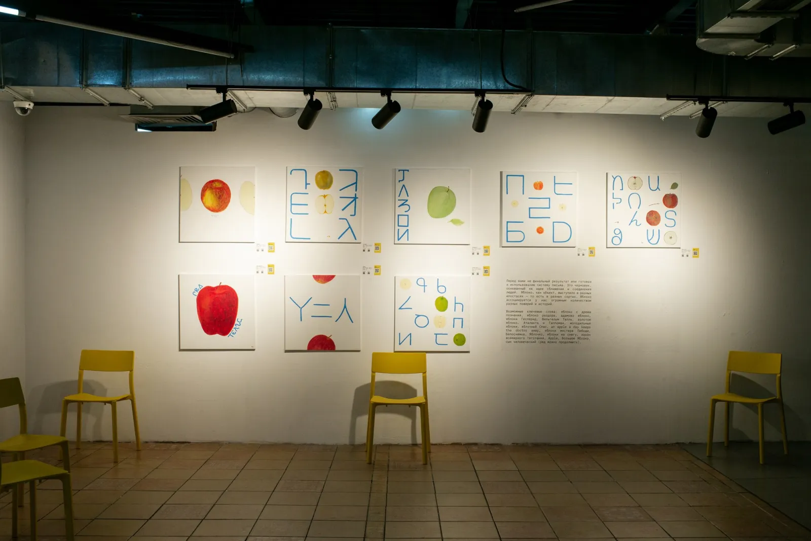
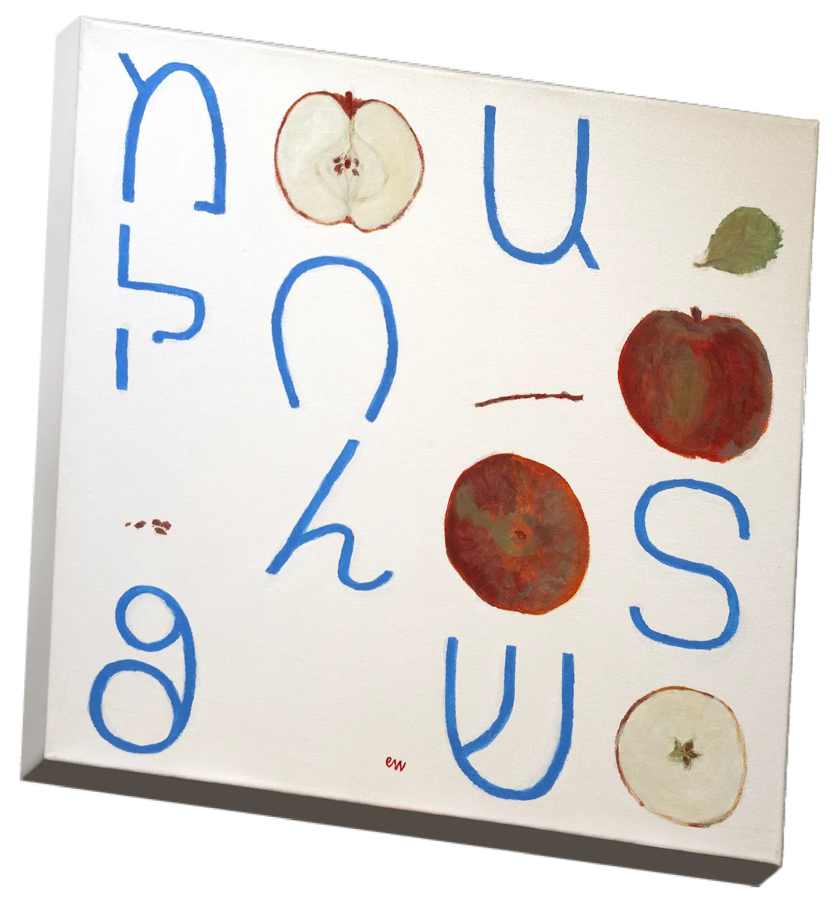
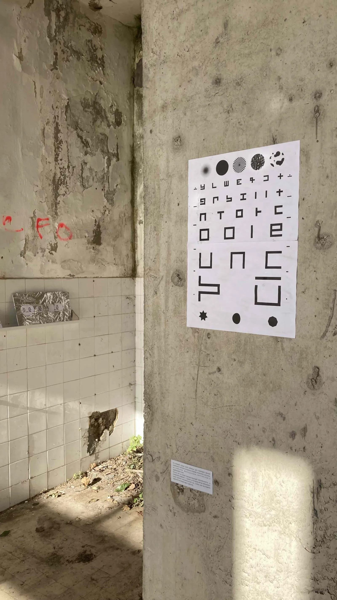
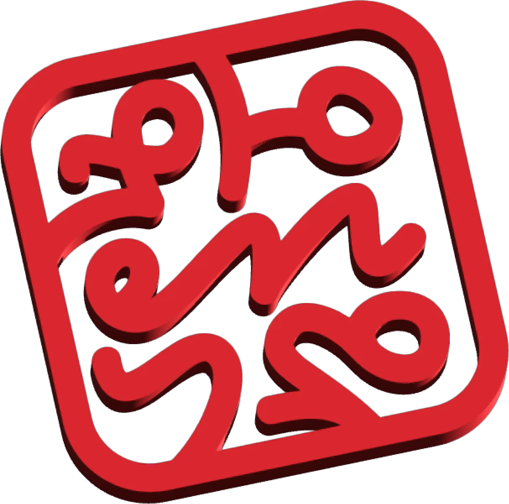

World Alphabet
Мировой алфавит
2020 – Present
2020 – настоящее время
An alphabet made of signs from different writing systems.
Алфавит из знаков разных письменностей.
A — Apple (2021)
Я — Яблоко (2021)
A series of paintings in the manner of an alphabet book and a botanical atlas: apple varieties, each named in the World Alphabet. Solo exhibition, Terminal Gallery, Nizhny Novgorod.
Серия картин в манере азбуки и ботанического атласа: сорта яблок, у каждого — название, написанное Мировым алфавитом. Персональная выставка, галерея «Терминал», Нижний Новгород.


Void (2023)
Пустота (2023)
An eye chart. Group exhibition 0_0_zero-zero, Kafedra Gallery, Herceg Novi.
Таблица для проверки зрения. Групповая выставка «0_0_zero-zero», галерея «Kafedra», Херцег-Нови.

New World
New World
A design for embroidery on clothing. Commissioned, not realised.
Эскиз для вышивки на одежде. Заказ, не реализован.
